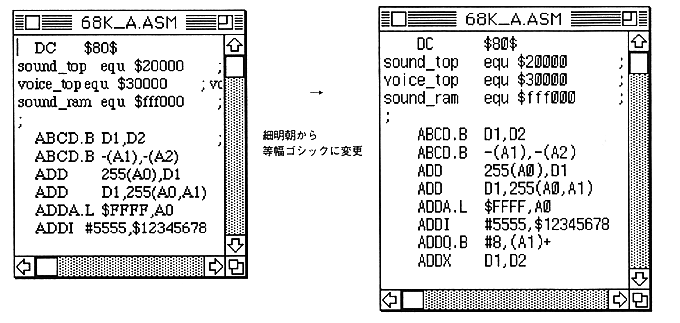

Return to previous page ｜ Return to menu ｜ Go to next page
-
Font
- Changes the font of the active text window.
The fonts that can be used will be selected from among the fonts that are registered in the system folder when the application starts up and are registered in the menu.

Return to previous page ｜ Return to menu ｜ Go to next page